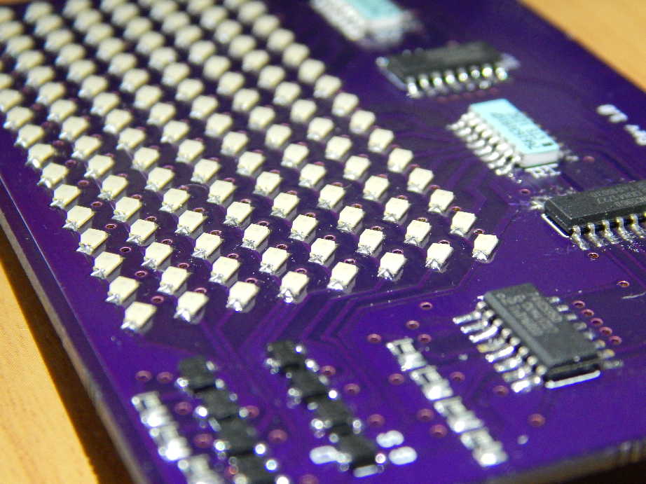

Kyle Hess - Bellevue, WA
LED Matrix Display
For displaying basic dot-matrix style graphics, numbers, and words. Current version must be interfaced with an Arduino Uno.
Overall Design
 This display was built around the 74HC595 8-bit shift register. The board utilizes three of these devices, daisy chained together, to shift 24 bits of data per cycle. A single shift register controls each of the eight rows via eight N-channel MOSFETs. The other two shift registers sink current from each of the 16 columns. This is viable because at any time, only one row will be turned on, thus only one LED per column will be on. This does not exceed the current limits of the column shift registers. However, MOSFETs must be used for each of the rows since up to 16 LEDs may be turned on (16 * ~20mA = 320mA!).
This display was built around the 74HC595 8-bit shift register. The board utilizes three of these devices, daisy chained together, to shift 24 bits of data per cycle. A single shift register controls each of the eight rows via eight N-channel MOSFETs. The other two shift registers sink current from each of the 16 columns. This is viable because at any time, only one row will be turned on, thus only one LED per column will be on. This does not exceed the current limits of the column shift registers. However, MOSFETs must be used for each of the rows since up to 16 LEDs may be turned on (16 * ~20mA = 320mA!).
Parts:
-74HC595 Shift Register x3
-SSM3K339R MOSFET x6
-180Ohm Resistor Array x 2
-0805 SMD LED x128
Schematic PDF
Arduino Code
Final Revision

{kind=link}
{kind=link}
Specifications

-Runs on 3.3V or 5V logic
-Estimated 200mA max continuous current
-Dimmable via PWM input
-Requires up to 5 Arduino GPIO pins
-200Hz max refresh rate
{kind=link}
Future Improvements
My plans for future improvements include incorporating a microcontroller on the display board itself as well as some method of user input. I would also like to change the board from a two-layer PCB to a four-layer. This would allow most, if not all, of the non-LED components to be placed on the bottom side of the board and shrink the overall size.